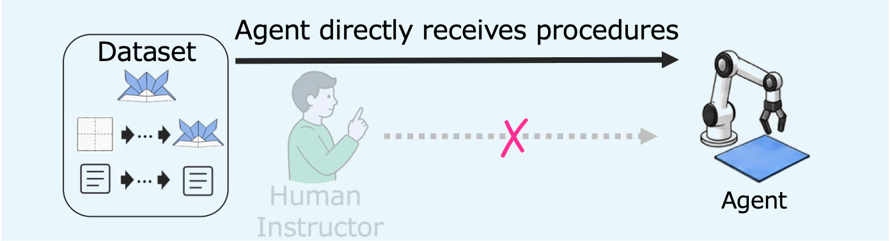
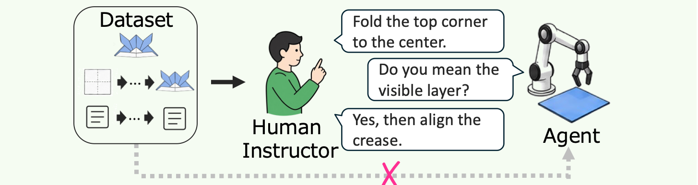
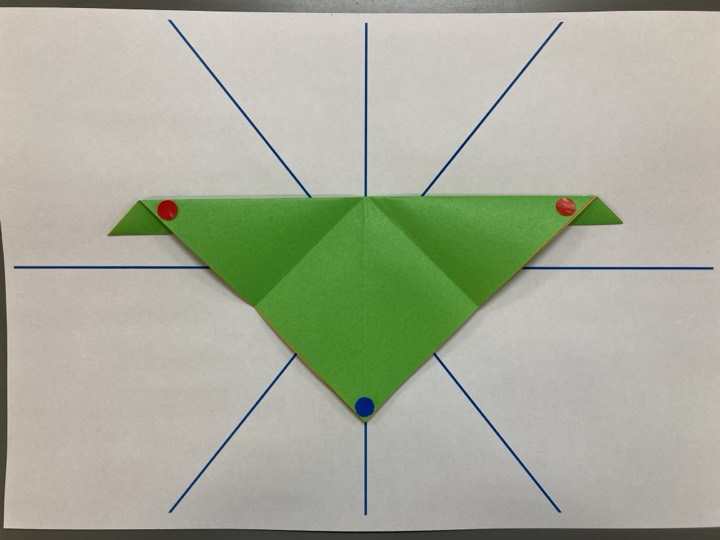
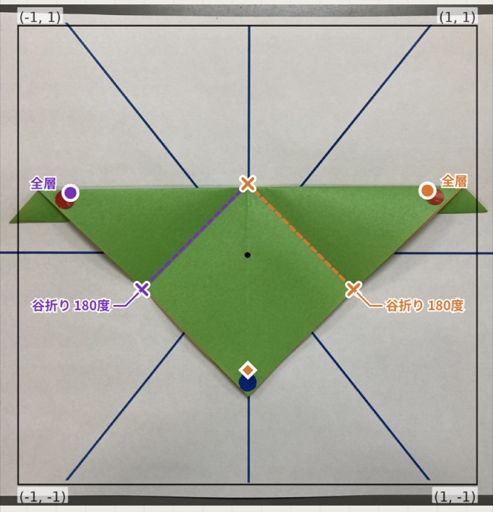
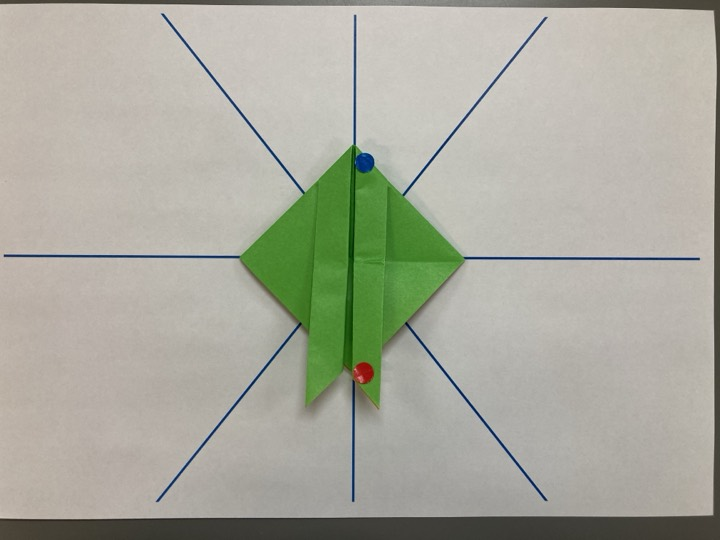

Abstract
General-purpose embodied AI systems are increasingly expected to interpret multimodal instructions and perform fine-grained physical tasks. However, many manipulation benchmarks provide limited support for jointly evaluating procedural correctness, local geometric sensitivity, and human-guided correction. We propose origami as a benchmark based on real images for procedural state-transition reasoning. Origami requires precise operations such as tucking, inserting, reversing, and folding overlapping layers, making it a focused domain for studying physical state transitions. We introduce OrigamiTrace, a dataset of step-by-step folding images, textual entries, and difficulty annotations, and define two tasks, i.e., autonomous state transitions from multimodal instructions and human-guided collaborative transitions. Unlike crease-pattern- or diagram-based origami benchmarks, the proposed benchmark is grounded in photographs of actual intermediate folding states. In an initial simulator-based evaluation, we use three multimodal LLM controllers to evaluate procedural understanding, action-interface grounding, and retry-based correction.
Dataset
Each origami design is an ordered sequence of photographs of intermediate paper states, from paper preparation to the completed origami. For each non-final step, a human-written textual entry describes the operation required to reach the next state; the final step marks completion. Images were captured in a controlled, fiducial-assisted setup, and every transition was checked for foldability, specification conformance, and text quality.

Difficulty levels
 Level 1 – Beginner58 designs (16.7%)
Level 1 – Beginner58 designs (16.7%) Level 2 – Elementary131 designs (37.6%)
Level 2 – Elementary131 designs (37.6%) Level 3 – Intermediate144 designs (41.4%)
Level 3 – Intermediate144 designs (41.4%) Level 4 – Advanced15 designs (4.3%)
Level 4 – Advanced15 designs (4.3%)Dataset Examples
Browse one origami design from each difficulty level. Each step pairs a captured state image with the textual entry describing the operation that leads to the next state. Dot stickers on the paper serve as fiducial cues: red and blue stickers indicate source and target positions for folds when needed.
Textual entry
Images are downscaled for the web. Use the arrow keys to step through a design. The full dataset is available on Harvard Dataverse.
Tasks
A benchmark episode is formed by selecting a start state and a later target state from the same procedure, together with the corresponding state images and textual entries.
Task 1: Autonomous Origami State Transition

The agent directly receives the reference image sequence, textual instructions, and target state, and must execute each transition. After a failed attempt it receives fixed feedback and may retry.
Task 2: Human-Guided Collaborative Origami State Transition

The agent has no direct access to the reference procedure. A human instructor who sees the procedure guides it step by step in natural language, answers clarification questions, and gives corrective feedback.
Example: one Task 1 transition
Current state + entry

“Make valley folds diagonally from the red dot stickers to the blue dot sticker.”
Agent output
{"command_name": "fold",
"fold_infos": [{
"fold_type": "valley",
"source_point": [-0.77,0.24],
"target_point": [0,-0.53],
...}, {...right side...}]}A JSON simulator command with two simultaneous valley folds.
Visualized command

The command drawn on the current image: crease ×, source ● → target ◆.
Human judge

Attempt 1 ✗ “The fold is incorrect. Please regenerate it.”
Attempt 2 ✓ → next state
Results
We evaluate three multimodal LLM controllers that operate an origami simulator through structured commands, on all 348 procedures with the same start–target pairs in both tasks.
| Model | Episode-SR | Trans-SR | First-Att-SR | Avg Att/Trans ↓ | Retry-SR |
|---|---|---|---|---|---|
| Task 1 | |||||
| GPT 5.6 Sol | 22.7% | 34.1% | 61.3% | 1.68 | 38.2% |
| Gemma 4 31B | 3.7% | 6.4% | 26.3% | 2.44 | 8.2% |
| Gemma 3 12B IT | 1.7% | 0.8% | 2.8% | 2.93 | 2.6% |
| Task 2 | |||||
| GPT 5.6 Sol | 25.6% | 40.3% | 58.5% | 1.69 | 50.9% |
| Gemma 4 31B | 3.4% | 8.5% | 28.6% | 2.36 | 14.1% |
| Gemma 3 12B IT | 2.9% | 3.0% | 14.3% | 2.69 | 4.8% |
SR: success rate. Episode-SR counts procedure segments completed from the start state to the target state; transition-level metrics diagnose partial progress and retry-based correction. See the paper for definitions and significance tests.
BibTeX
@inproceedings{numaya2026origamitrace,
title = {Origami as a Real-Image Benchmark for Procedural State-Transition Reasoning},
author = {Ikumi Numaya and Reina Akama and Kise Yoshida and Yuka Saito and
Sumika Tsuda and Takahiro Shimizu and Miori Sagara and Jun Suzuki},
booktitle = {The Fortieth Annual Conference on Neural Information Processing Systems
Evaluations and Datasets Track},
year = {2026}
}